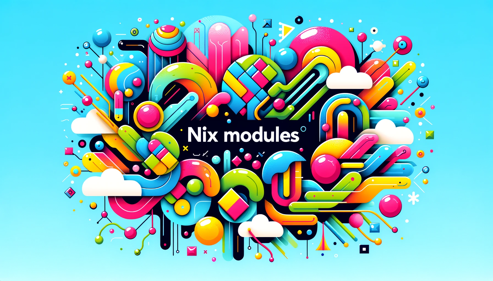

Using the module system is a key stepping stone to writing maintainable and shareable Nix code. In this tutorial, we’ll write a configuration system for the simple lsd command, thus introducing the reader to the Nix module system, so that they benefit from features such as configuration type checking, option documentation, and modularity. To learn more about the module system, we recommend this video from Tweag as well the article “Module system deep dive” from nix.dev.

We shall begin by understanding the low-levels: how to use evalModules from nixpkgs to define and use our own modules from scratch, using the aforementioned lsd use-case. The next tutorial in this series will go one high-level up and talk about how to work with modules across flakes, using flake-parts.
A simple example
Consider the following Nix code, defined in a flake:
{
inputs = {
nixpkgs.url = "github:NixOS/nixpkgs/nixos-unstable";
};
outputs = { self, nixpkgs }:
let
# TODO: Change this to x86_64-linux if you are on Linux
system = "aarch64-darwin";
pkgs = nixpkgs.legacyPackages.${system};
in
{
packages.${system}.default = pkgs.writeShellApplication {
name = "list-contents";
runtimeInputs = [ pkgs.lsd ];
text = ''
lsd -l /
'';
};
};
}
All source code for the Nix in this tutorial is available here.
This is a simple flake that exposes a package (a writeShellApplication Derivation wrapping lsd), that can be `nix run`ed to list the contents of the root directory.
❯ nix run
drwxrwxr-x root admin 2.5 KB Tue Jan 30 15:19:06 2024 Applications
drwxr-xr-x root wheel 1.2 KB Sat Nov 18 23:43:59 2023 bin
dr-xr-xr-x root wheel 5.1 KB Wed Jan 17 09:21:57 2024 dev
lrwxr-xr-x root wheel 11 B Sat Nov 18 23:43:59 2023 etc ⇒ private/etc
lrwxr-xr-x root wheel 25 B Wed Jan 17 09:22:56 2024 home ⇒ /System/Volumes/Data/home
drwxr-xr-x root wheel 2.2 KB Mon Dec 4 02:08:02 2023 Library
drwxr-xr-x root wheel 224 B Sat Jul 22 20:09:12 2023 nix
...
This program is hardcoded to do a certain thing: it can list the contents of the / directory. Now let’s say we want to configure its behaviour but without having to modify the derivation itself.
In particular, we want our program to:
- list a different directory.
- or, show a tree view rather than a linear list.
Normally we can achieve this by refactoring our Nix expression to be a function (see lsdFor ⤵️) that takes arguments for these variations (dir and tree ⤵️), producing the appropriate derivation as a result:
{
inputs = {
nixpkgs.url = "github:NixOS/nixpkgs/nixos-unstable";
};
outputs = { self, nixpkgs }:
let
# TODO: Change this to x86_64-linux if you are on Linux
system = "aarch64-darwin";
pkgs = nixpkgs.legacyPackages.${system};
# ⤵️ We introduced a function here
lsdFor = { dir, tree ? false }: pkgs.writeShellApplication {
name = "list-contents";
runtimeInputs = [ pkgs.lsd ];
text = ''
lsd ${if tree then "--tree" else ""} "${dir}"
'';
};
in
{
packages.${system} = {
# ⤵️ And call that function here
default = lsdFor { dir = "/"; };
home = lsdFor { dir = "$HOME"; };
downloads = lsdFor { dir = "$HOME/Downloads"; tree = true; };
};
};
}
Now we can try out each of these variations:
❯ nix run .#home
code Documents Keybase Movies org ...
❯ nix run .#downloads
Downloads
├── '$RECYCLE.BIN'
│ └── desktop.ini
├── 2303.18223.pdf
├── 4.jpg
├── '[ORIGINAL] PKD MASTERY GUIDE BOOK.pdf'
├── 'ACTUAL FREEDOM'
│ ├── 'ACTUAL FREEDOM (1).txt'
│ └── "ACTUAL FREEDOM (Richard's Words Only).txt"
...
The lsdFor function returns a lsd wrapper package that behaves in accordance with the arguments we pass to it. The flake outputs three packages, including one for listing the user’s home directory as well as their “Downloads” folder as a tree view.
lsd module
Our above flake is simple enough that it strictly doesn’t require further refactoring. However, in larger flakes, having functions peppered throughout the project can be rather difficult to entangle; besides, we want to modular overrides and type checking, along with documentation. To this end, we’ll see how to refactor the above to use the module system, and in the process we’ll add more configurability to our lsd wrapper.
Introducing the module system
-
A Nix module is a specification of various
options. -
When the user
importsthis module, they can assign these options. -
The module implementation (ie., the
configattribute) will then use these values to produce the final expression to substitute in call site where the module gets imported.
Modules can import each other in nested fashion; and option types can have certain merge semantics allowing you to define the same option across multiple modules.
This is a mouthful, so let’s get down to the concrete details. To port our flake above, we need to define two options: dir, and tree. We will as well add a third option that is not user-setable but will be used set the resulting package.
Here’s our lsd module, defined in lsd.nix alongside the flake. Follow along the code comments:
# A module can be an attrset, or a function returning an attrset.
#
# Our module here is of the latter kind. By default, certain arguments are
# automatically passed. You can specify additional arguments in `_module.args`.
{ pkgs, lib, config, ... }:
{
# A module's "interface" is defined in `options`.
options = {
# The `lsd` option is of type sub-module; meaning, it can contain further
# options and config.
lsd = lib.mkOption {
default = { };
type = lib.types.submodule {
options = {
# The `dir` option is of type string.
#
# If the user doesn't set it, its default value of "/" is used.
dir = lib.mkOption {
type = lib.types.str;
default = "/";
description = "The directory to list";
};
# The `tree` option is of type boolean.
tree = lib.mkOption {
type = lib.types.bool;
default = false;
description = "Whether to show a tree view";
};
# The `package` option is of type package.
#
# It is not user-settable, hence `readOnly = true`. The value will be
# set in the `config` implementation below.
package = lib.mkOption {
type = lib.types.package;
readOnly = true;
};
};
};
};
};
# A module's "implementation" is defined in `config`.
config =
let
cfg = config.lsd;
in
{
lsd.package =
pkgs.writeShellApplication {
name = "list-contents";
runtimeInputs = [ pkgs.lsd ];
text = ''
lsd ${if cfg.tree then "--tree" else ""} "${cfg.dir}"
'';
};
};
}
We recommend that you follow the comments in the above Nix file to understand its structure. As always, consult Module system deep dive to learn of all the details.
Note:
-
mkOptionis used create the option types -
Types used here: str, bool, package and submodule
- A “submodule” is a nested module, with its own options/ imports and config.
-
configgives the implementation when the user sets the options.-
In our case, we ‘output’ the result in the
packageoption (which cannot be set by the user, due toreadOnly = true).
-
In our case, we ‘output’ the result in the
Let’s evaluate it from the nix repl:
❯ nix repl
Welcome to Nix 2.19.2. Type :? for help.
nix-repl> :lf nixpkgs
Added 15 variables.
nix-repl> pkgs = legacyPackages.${builtins.currentSystem}
nix-repl> lib = pkgs.lib
nix-repl> res = lib.evalModules { modules = [ ./lsd.nix { lsd.dir = "$HOME"; } ]; specialArgs = { inherit pkgs; }; }
nix-repl> res.config.lsd.package
«derivation /nix/store/my26y1wp6801sslfvfzf21q41fzh8bch-list-contents.drv»
nix-repl> :b res.config.lsd.package
This derivation produced the following outputs:
out -> /nix/store/m8phgz5ch7whqbs5pk991pc0cfczsghk-list-contents
Using evalModules, as we saw in the repl session, we can refactor our previous flake:
{
inputs = {
nixpkgs.url = "github:NixOS/nixpkgs/nixos-unstable";
};
outputs = { self, nixpkgs }:
let
# TODO: Change this to x86_64-linux if you are on Linux
system = "aarch64-darwin";
pkgs = nixpkgs.legacyPackages.${system};
lib = pkgs.lib;
lsdFor = settings:
let
result = lib.evalModules {
modules = [
# Note that 'settings' is no different to the lsd.nix module.
./lsd.nix
settings
];
# Arguments passed here become automatically available to all
# modules.
specialArgs = { inherit pkgs; };
};
in
result.config.lsd.package;
in
{
packages.${system} = {
default = lsdFor { lsd.dir = "/"; };
home = lsdFor { lsd.dir = "$HOME"; };
downloads = lsdFor { lsd.dir = "$HOME/Downloads"; lsd.tree = true; };
};
};
}
You may notice that there’s not much difference. If anything our new flake is slightly more complex, due to use of evalModules. The simplicity of the module system will become evident as you write more complex flakes, or if you want to share your modules or override them.
Importing modules
Let’s do something more interesting in the above flake. We’ll create a “common settings” module, and then use that across the packages using the imports attribute. evalModules implements a type merge system that knows how to merge same attributes from multiple modules.
{
inputs = {
nixpkgs.url = "github:NixOS/nixpkgs/nixos-unstable";
};
outputs = { self, nixpkgs }:
let
# TODO: Change this to x86_64-linux if you are on Linux
system = "aarch64-darwin";
pkgs = nixpkgs.legacyPackages.${system};
mkLib = pkgs: {
lsdFor = settings:
let
result = pkgs.lib.evalModules {
modules = [
./lsd.nix
settings
];
specialArgs = { inherit pkgs; };
};
in
result.config.lsd.package;
# ⤵️ A common module for re-use in other modules (see below)
common = {
lsd = {
long = pkgs.lib.mkDefault true;
};
};
};
inherit (mkLib pkgs) lsdFor common;
in
{
# ⤵️ Let's export some things for use in 5/flake.nix
inherit mkLib;
packages.${system} = {
default = lsdFor {
# ⤵️ Here, we import the common module
imports = [ common ];
lsd.dir = "/";
};
home = lsdFor {
# ⤵️ Here, we import the common module
imports = [ common ];
lsd.dir = "$HOME";
};
downloads = lsdFor {
# ⤵️ Here, we import the common module
imports = [ common ];
lsd = {
dir = "$HOME/Downloads";
tree = true;
};
};
};
};
}
Compared to the 3rd flake, we have:
-
In File:nix-modules/4/lsd.nix: a new option
longto specify-lto lsd. -
In File:nix-modules/4/flake.nix:
-
a new module
commonenabling thelongoption. -
all packages now
importsthis common module, to derive thelongoption. -
a
mkLibfunctions that we will export for reuse from another flake (see below)
-
a new module
Now when you nix run these programs you will get similar output to the previous flake but with a long listing instead.
Sharing modules across flakes
We will create a 5th flake that re-uses module from the 4th flake above. This is a contrived example, but it demonstrates how you can share modules across flakes.
{
inputs = {
nixpkgs.url = "github:NixOS/nixpkgs/nixos-unstable";
# ⤵️ 4/flake.nix is specified as input here, to allow us to reuse its
# outputs.
flake4.url = "path:../4";
};
outputs = { self, nixpkgs, flake4 }:
let
# TODO: Change this to x86_64-linux if you are on Linux
system = "aarch64-darwin";
pkgs = nixpkgs.legacyPackages.${system};
# ⤵️ We import the library from 4/flake.nix
lsdLib = flake4.mkLib pkgs;
in
{
packages.${system} = {
# ⤵️ And use it here.
default = lsdLib.lsdFor {
imports = [ lsdLib.common ];
lsd.dir = "/";
};
home = lsdLib.lsdFor {
lsd.dir = "$HOME";
};
downloads = lsdLib.lsdFor {
lsd = {
dir = "$HOME/Downloads";
tree = true;
};
};
};
};
}
Note that,
-
File:nix-modules/4/flake.nix outputs a
mkLibfunction that gives us thecommonmodule along with thelsdForfunction. -
In File:nix-modules/5/flake.nix, we access these for re-use, thus relieving our 5th flake of having to define
lsd.nixand thecommonmodule.
Our 5th flake is fairly simple, due to hiding all the implementation in an external flake (4th flake). The 5th flake contains only the “what” and not the “how” of our lsd packages; it tells us what to configure, hiding the implementation in an input flake (4th flake).
Where to go from here?
You have just read a quick introduction to the module system, in particular how to define, use and share them in Flakes. To learn more about the module system, we recommend this video from Tweag as well the article “Module system deep dive” from nix.dev. Look out for the next tutorial in this series, where we will talk about flake-parts.